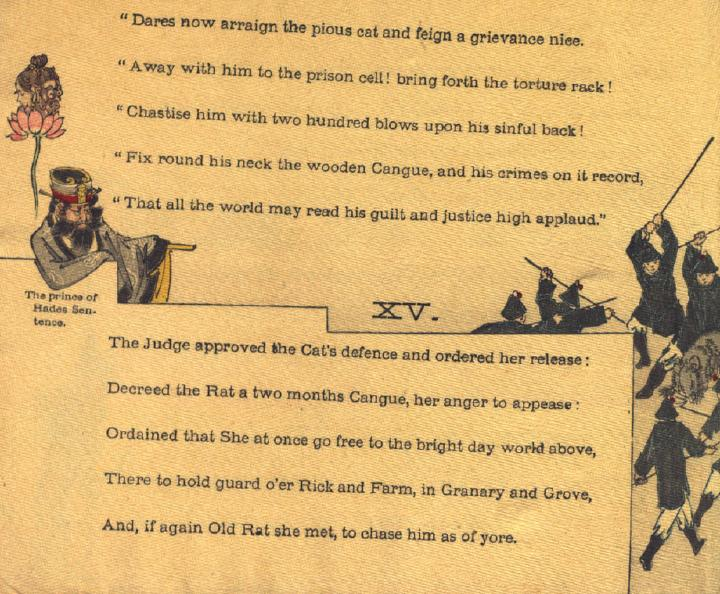

鼠が兵士のような人間たちに囲まれて、棒のようなもので打たれている。その様子を、閻魔が眺めている。
著作者：John Little Archibald／出典：親書誌：U426_nichibunken_0122：The rat's plaint／日付：2006／資源識別子：U426_nichibunken_0122_0010_0000
Copyright (c)2010- International Research Center for Japanese Studies, Kyoto, Japan. All rights reserved.